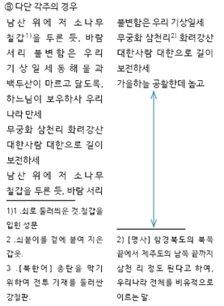
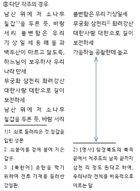

한글폰트
한글 폰트 개요
한글 폰트의 글자는 한글, 문장부호, 로마자, 숫자, 특수문자(약물)로 구성된다.
유니코드에서 한글 코드 영역
유니코드의 한글 영역에는 완성형 한글 글자와 자모로 구성되어 있다. (코드표는 부속서 A 참조)
- 완성형 한글: U+AC00 ~ U+D7A3
- 한글 자모: U+1100 ~ U+11FF
- 한글 호환 자모: U+3130 ~ U+318E
- 한글 자모 확장-A: U+A960 ~ U+A970
- 한글 자모 확장-B: U+D780 ~ U+D7FB
유니코드에 의거한 한글 문장 부호 영역
한글 환경에서는 다음과 같은 문장 부호를 사용한다. (코드표는 부속서 A 참조)
- 기본 로마자 (U+0020~U+007F): 로마자(비례폭), 숫자, 반각 약물
- 일반 구독점 (U+2010~): 굽은 따옴표
- 위첨자, 아래첨자 (U+2070~)
- 통화 기호 (U+20A0~): ₩
- 문자형 기호 (U+2100~): ℃, ℉, №
- 숫자류 (U+2050~) : 분수, 로마 숫자
- 화살표 (U+2190~)
- 수학 기호 (U+2200~)
- 둘러싼 로마자·숫자 (U+2460~)
- 괘선 요소 (U+2500~)
- 블럭 요소 (U+2580~)
- 기하 도형 (U+25A0~)
- 기타 기호 (U+2600~): 별, 하트, 깃발, 해, 구름. 달, 우산
- 딩벳 장식 기호 (U+2700~)
- CJK 기호 및 구두점 (U+3000~): 전각 괄호, 온점, 고리점
- 한글 호환 자모 (U+3130~)
- 둘러싼 CJK 문자·숫자 (U+3200~)
- 한글 자모 확장A (U+A960~)
- 한글 완성형 (U+AC00~U+D7A3)
- 한글 자모 확장B (U+D7B0~)
- CJK호환한자 (U+F900~)
- CJK호환형 (U+FE30~FE48): 세로짜기 괄호, 구독점
한글 가로짜기 및 세로짜기 문장 부호
CJK 전각 기호와 문장부호(CJK Symbols and Punctuation; U+3008~U+300F)를 기본으로 사용한다. 단, 구독점의 경우, 가로짜기에는 반각 문장 부호(반점(쉼표); U+002C, 온점(마침표); U+002E)를, 세로짜기에는 전각 문장 부호(모점; U+3001, 고리점; U+3002) 사용을 기본값으로 한다.

한글 폰트의 종류
한글은 낱 글자의 글자틀의 너비에 따라 비례폭과 고정폭을 사용한다.
비례폭 한글 폰트
한글(Hangul Syllables; U+AC00 ~ U+D7A3) 글리프가 ‘각 글자면 너비에 비례하는 글자틀 폭’을 사용하는 방식이다.
고정폭 한글 폰트
한글(Hangul Syllables; U+AC00 ~ U+D7A3) 글리프에 일정한 글자틀 폭을 사용하는 방식이다.
'글자틀 내 글자면 위치' 표준
고정폭 한글 폰트의 '글자틀 내 글자면 위치'를 표준화는 한글 폰트 간의 글자사이 비율 호환성을 향상하기 위함이다(한글 폰트를 변경해도 문장부호의 좌우 여백 관계가 그대로 유지되도록 한다. 글줄 시작에 위치한 열기 괄호·따옴표에 의도치 않은 여백이 생겨 단락의 왼쪽 외곽선이 흐트러지는 경우를 방지한다).
전각 괄호의 '글자틀 내 글자면 위치' 지정
가로짜기의 경우 전각 열기 괄호의 글자면은 글자틀의 오른쪽(가로짜기)·아랫쪽(세로짜기) 끝에 두고, 왼쪽 여백은 사용자 조정 영역으로 간주한다. 세로짜기의 경우 전각 열기 괄호의 글자면은 글자틀의 아랫쪽 끝에 두고, 여백은 사용자 조정 영역으로 간주한다.
가로짜기의 경우 전각 닫기 괄호의 글자면은 글자틀의 왼쪽(가로짜기)·윗쪽(세로짜기) 끝에 두고, 오른쪽 여백은 사용자 조정 영역으로 간주한다. 세로짜기의 경우 전각 닫기 괄호의 글자면은 글자틀의 윗쪽 끝에 두고, 여백은 사용자 조정 영역으로 간주한다.
구두점의 '글자틀 내 글자면 위치' 지정
가로짜기의 경우 글자틀의 왼쪽 끝에 글자면을 배치한다. 나머지 우측 영역은 폰트 사용자의 임의 여백 지정이 가능하도록 한다.
기타 글리프의 '글자틀 내 글자면 위치' 지정
비레폭 혹은 고정폭으로 디자인한다.
한글 폰트 커닝
한글 환경에 사용되는 모든 문자 또는 문자 클래스 간의 커닝을 조정하는 타이포그래픽 옵션이다.
한글 폰트에 커닝 적용
한글 커닝은 초성, 중성, 종성의 조합에 따라 만들어지는 글자의 속공간과 외곽영역을 고려하여 지정한다.

한글 그룹 커닝
한글 완성형 11,172자의 커닝 작업에는 효율적인 작업을 위해 그룹 커닝을 적용할 수 있다. 그룹 커닝을 적용하기 위해서 커닝 그룹을 설정하고 그룹 커닝의 짝을 지정한다.


 
